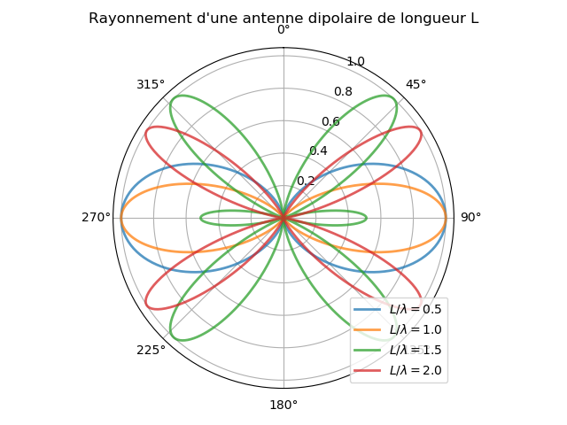

## NOM DU PROGRAMME: DipRadiation.py
#% IMPORTATION
import numpy as np
import matplotlib.pyplot as plt
import mpl_toolkits.mplot3d.axes3d as axes3d
def rho(theta, rapport = 0.7):
u = 2*rapport* np.pi
F = (np.cos(u*np.cos(theta)) - np.cos(u))/np.sin(theta)
G = F * F
return G/G.max()
plt.figure()
ax = plt.subplot(111, polar=True)
plt.title("Rayonnement d'une antenne dipolaire de longueur L")
ax.set_theta_zero_location('N')
ax.set_theta_direction(-1)
ax.grid(True)
theta = np.linspace(0.01,2*np.pi,500)
for rapport in [0.1,0.5,1.0,1.5]:
ax.plot(theta,rho(theta, rapport),label=r"$L/\lambda=%.1f$"%rapport)
plt.legend(loc='lower right')
plt.tight_layout()
plt.savefig("dipole.png"); plt.savefig("dipole.pdf")
plt.show()
#% Dipôle 3D
theta = np.linspace(0.01,np.pi,400)
phi = np.linspace(0.01,2*np.pi,400)
THETA, PHI = np.meshgrid(theta,phi)
#
def sph2cart(azimuth,elevation,r):
x = r * np.sin(elevation) * np.cos(azimuth)
y = r * np.sin(elevation) * np.sin(azimuth)
z = r * np.cos(elevation)
return x, y, z
rapport = 0.5
X, Y, Z = sph2cart(PHI,THETA,rho(THETA,rapport = rapport))
# Plot
import matplotlib.colors as mcolors
fig = plt.figure()
ax = fig.add_subplot(1,1,1, projection='3d')
ax._axis3don = False # hide x, y, z axis
cmap = plt.get_cmap('gnuplot')
norm = mcolors.Normalize(vmin=Z.min(), vmax=Z.max())
plot = ax.plot_surface(
X, Y, Z, rstride=8, cstride=8,
facecolors=cmap(norm(Z)), antialiased=True, alpha=0.5)
plt.title("Diagramme de rayonnement: "+r"$L/\lambda=%.1f$"%rapport)
plt.tight_layout()
plt.savefig("dipole3D.png"); plt.savefig("dipole3D.pdf")
